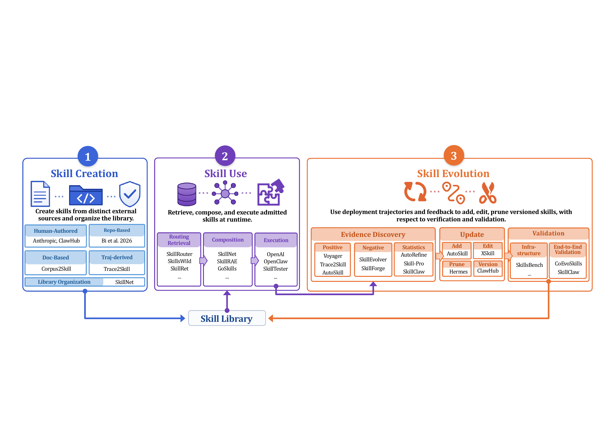
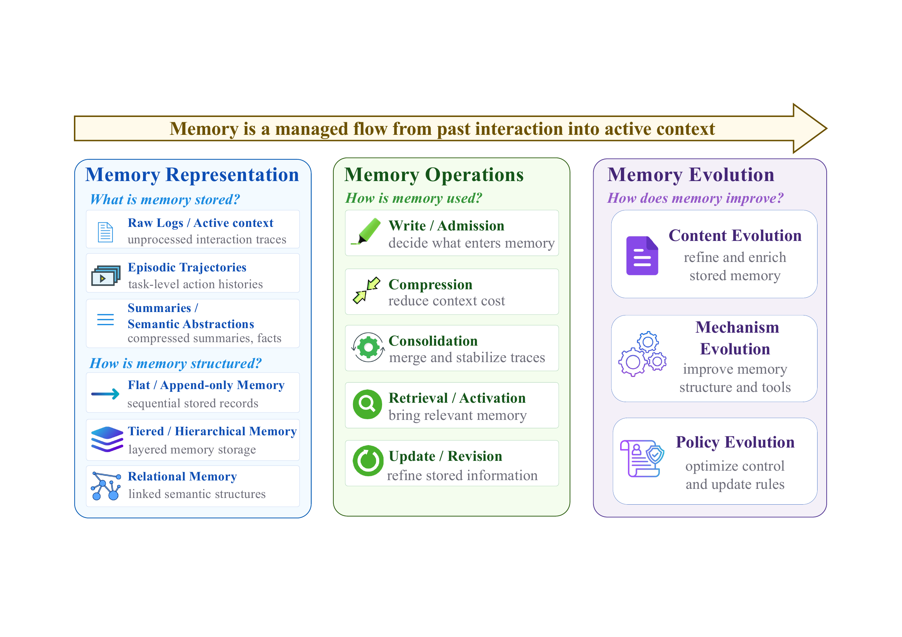
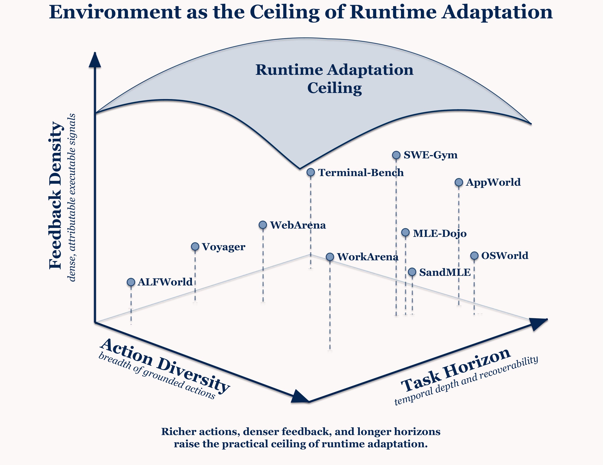

Harness-agent definition
The runtime object is the model together with a mutable harness, a user-facing side, and an environment-facing side.

In the Era of Experience, agentic AI is no longer defined only by what a model can infer from static data, but by how a deployed system accumulates, organizes, and reuses experience from interaction. This survey studies experience-driven improvement in deployed agentic AI systems. We focus on the runtime harness as the infrastructure that captures traces, routes actions, exposes feedback, and governs mutable state. Around this infrastructure, we review how experience becomes reusable skill, persistent memory, verifiable environment feedback, trainable model behavior, and meta-level control. We then identify the remaining barriers to reliable improvement, including longitudinal evaluation, transfer, verification, and safety governance. Making agents smarter after deployment is therefore a trace-to-capability problem: the field must learn how to capture experience, assign it to the right update surface, verify its value, and preserve control as the system changes.
Overview of the survey
The survey's central claim is that making agents smarter after deployment is a trace-to-capability problem. A deployed system must capture interaction traces, compile them into usable experience, assign that experience to the right update surface, verify its value, and preserve control as the system changes.

The runtime object is the model together with a mutable harness, a user-facing side, and an environment-facing side.
Skills, memory, environments, tools, and other harness surfaces can change quickly, visibly, and reversibly during deployment.
Stable deployment experience can later be promoted into model behavior, but only after the evidence is strong enough to justify a harder-to-reverse update.
A self-improving agent must be measured as a changing system, with retention, cost, attribution, and control tracked over time.
Harness as Experience Infrastructure
The first step is to name the object that can improve after deployment. The paper defines a deployed agentic AI system as a base model wrapped by a mutable harness, with user-facing and environment-facing sides that supply goals, actions, observations, tests, corrections, and operational state.

Once the harness is explicit, improvement is no longer a loose collection of tricks. The core questions become precise: which component changed, what trace window produced the evidence, what update surface received it, and how the system knows the update helped.
Harness as Experience Infrastructure
The historical shift is not simply that agents call more tools. The object of study moves from episodic tool-use loops, to cross-task reuse, to persistent harness-centered runtimes whose memory, workflows, skills, and feedback channels can themselves evolve after deployment.

Experience-Centric Scope and Survey Organization
The paper first follows deployment experience into editable runtime surfaces. This path is fast, inspectable, and reversible: experience can become reusable procedure, persistent state, and richer executable worlds before any parameter update is justified.



RL and Continual Learning: Consolidating Experience into Model Parameters
The parameter path is not a replacement for the harness path. It is a slower consolidation step: repeated runtime lessons are promoted into model behavior only when they are stable, general, and valuable enough to justify a harder-to-reverse update.

Measuring Self-Improvement: What Current Benchmarks Still Miss
A higher post-adaptation score does not necessarily mean that a deployed system became better overall. The evaluation target is the measurable longitudinal effect of accumulated experience on the same evolving agent system.

The field needs protocols that ask whether an agent can use accumulated experience to improve over time. Without longitudinal evaluation, we cannot tell durable self-improvement from one-off elicitation, overfitting, drift, or unsafe mutation.
The rows are generated from the Awesome-Self-Improving-Agents paper list and mapped onto exact LaTeX manuscript section headings for Chapter and Phase.
Showing 0 papers
| Date | Chapter | Paper | Phase |
|---|